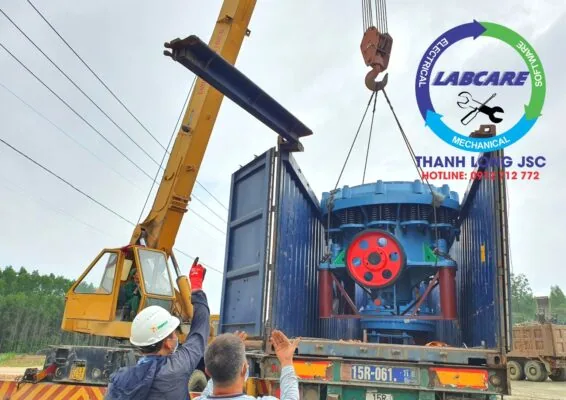
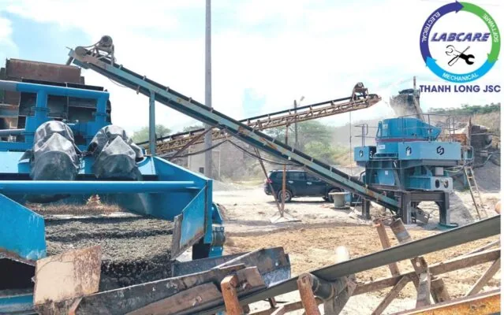

Vận hành máy nghiền đá vốn là chủ đề được đề cập đến rất nhiều trong quá trình vận hành máy móc, thiết bị tại các mỏ đá. An toàn lao động nói chung và vận hành máy nghiền đá an toàn khi khai thác, sử dụng các thiết bị công nghiệp hạng nặng nói riêng. Tuy nhiên, vẫn có những vụ tai nạn đáng tiếc xảy ra hằng năm.
Mục tiêu của những nhà đầu tư mỏ đá, không chỉ là hoạt động kinh doanh thuận lợi mà còn đưa những công nhân của họ về với gia đình trong sự an toàn tuyệt đối.
Mọi thương tích, sự cố có thể đã được được ngăn lại khi thợ vận hành máy nghiền đá nắm rõ quy trình hoạt động của máy nghiền và mỏ đá. Nói đến điều này không phải để đổ lỗi mà được đề cập để tăng cường cảnh giác. Chúng ta có thể ngăn chặn sự cố nếu như chúng ta có cách tiếp cận với máy nghiền đá đúng đắn hơn. Mỗi cách trong 6 cách dưới đây đều rất cần và được khuyến khích thực thi càng nhiều càng tốt.
1. Báo cáo ngay khi có các hoạt động bất thường của máy móc khi vận hành máy nghiền đá trong mỏ đá
Với tư duy an toàn là trên hết: khi có các hoạt động bất thường của máy móc, thiết bị khi vận hành máy nghiền hoặc trong môi trường làm việc cần phải thông báo ngay để có hướng xử lý kịp thời. Không chỉ vì lợi ích cá nhân mà còn vì những người xung quanh. Có một vài lý do khiến thợ vận hành máy nghiền giữ im lặng khi thấy các hoạt động không an toàn. Phần vì lo sợ sai hoặc “không an toàn ảo”, hay sợ cấp trên, đồng nghiệp, … khiển trách.
Tâm lý người vận hành trong mỏ đá
Điều này có thể dễ hiểu được, nhưng thực tế điều tốt nhất thợ vận hành có thể làm là coi trọng cuộc sống chính mình và của các anh em vận hành trong mỏ đá. Nó có thể khiến thợ vận hành “không giỏi”, “không chuyên nghiệp”, “không thoải mái” khi thông báo có một hoạt động nào đó của máy móc trong dây chuyền máy nghiền đá đang có sự cố. Điều đó có thể gây ra căng thẳng cho đồng nghiệp, cấp trên. Nhưng cũng có thể cứu một mạng người. Đừng ưu tiên sự “thoải mái” của bản thân, hơn sự an toàn của những người đang làm việc trong mỏ đá.
Lý do thứ hai khiến các công nhân vận hành không thông báo các hoạt động bất thường của máy nghiền đá vì quá tin tưởng vào kinh nghiệm của bản thân hay đồng nghiệp. Điều này dễ bắt gặp khi sử dụng dây chuyền máy nghiền đá xây dựng đã quá cũ. Với suy nghĩ bảo thủ, tin vào khả năng vận hành. Qua lời nói “Chúng tôi đã làm theo cách này trong nhiều năm và không gặp vấn đề gì…”. Vậy nên, điều cần được thay đổi đầu tiên chính là tư duy sử dụng thiết bị, máy móc.

2. Đừng làm việc vội vàng
Trong bất kỳ mỏ đá nào cũng có những áp lực về năng suất. Với mong muốn đem lại năng suất tốt cũng như cạnh tranh về sản phẩm đầu ra. Việc vội vàng khi vận hành máy nghiền đá sẽ không đảm bảo được an toàn. Quan trọng là thợ vận hành máy nghiền phải hiểu việc tiếp cận đúng máy móc thì tốt hơn là tiếp cận nhanh. Chủ đầu tư cần cố gắng nhấn mạnh vào giáo dục an toàn. Trước khi áp đặt thời hạn, năng suất của thợ vận hành máy nghiền. Năng suất tốt là quan trọng, nhưng một phần của năng suất là vận hành máy nghiền an toàn.
“Tập trung vận hành máy nghiền đá an toàn, đúng đắn thay vì vận hành máy nhanh, năng suất nhưng không an toàn.”
3. Đề cao giáo dục vận hành máy nghiền đá an toàn và quy trình vận hành
Sai lầm của những chủ đầu tư là không đề cao an toàn trên cả năng suất. Giáo dục vận hành máy nghiền đá an toàn là chìa khóa để quản lý an toàn hiệu quả cho các chủ đầu tư. Thợ vận hành phải hiểu các kỹ thuật để điều khiển máy móc. An toàn là trách nhiệm của mọi người, vì vậy chủ đầu tư nên tập trung vào huấn luyện quy trình an toàn cho mọi người.
Ví dụ: Tại Công ty Mellott, một nhà phân phối của Châu Âu ở Hoa Kỳ, các thợ vận hành máy luôn được tạo điều kiện tham gia cuộc hội thảo, tổ chức các khóa đào tạo hàng tuần về các nhiệm vụ để đảm bảo an toàn khi vận hành máy tại các mỏ đá và chủ động cung cấp các khóa học về các tính năng an toàn mới. Mục tiêu của Thanh Long là trang bị kỹ lưỡng cho đội vận hành nhận thức đầy đủ về vận hành máy nghiền an toàn.

4. Luôn có người để phân tích các mối nguy hiểm trong mỏ đá
Để sự an toàn luôn được ưu tiên, một người có trách nhiệm theo dõi sự an toàn. Cũng như nhanh chóng phát hiện ra các mối nguy hiểm. Nếu không có người được chỉ định, để kiểm tra và phân tích các mối nguy hiểm đang tiềm ẩn. Thì việc thông báo khi có nguy hiểm sẽ khó được diễn ra.
Thanh Long JSC khuyên bạn nên ưu tiên các cảnh báo dựa trên bộ phận theo dõi máy móc đi kèm . Đó là ý tưởng để việc kiểm soát các hệ thống máy móc, thiết bị hiệu quả hơn. Mỗi đội vận hành cần được phân công rõ ràng trách nhiệm trên từng cá nhân hoặc đội nhóm.
5. Tuân thủ quy định bảo trì vận hành máy nghiền đá
Tuân thủ lịch bảo trì của máy nghiền đá không chỉ là đảm bảo an toàn mà còn là một cách tốt để cải thiện năng suất cho máy móc. Máy nghiền đá không được bảo dưỡng tốt có khả năng bị trục trặc và gây nguy hiểm cho thợ vận hành trong mỏ đá.
Điều quan trọng là phải bảo trì theo quy định của nhà sản xuất để giảm thiểu các vấn đề; thay vì chờ đợi mọi thứ trở nên hư hỏng. Ngoài ra, có thể bảo trì dựa trên thiết bị dễ nhìn thấy được từ các khu vực dễ bị hư hỏng nhất.
6. Sử dụng thiết bị bảo hộ cá nhân (PPE) đúng cách
Cuối cùng, một sai lầm phổ biến tại các mỏ đá là thợ vận hành máy nghiền đá nhiều sử dụng thiết bị bảo hộ cá nhân không đúng cách. Điều này liên quan đến việc huấn luyện vận hành máy nghiền trước đó. Đặc biệt là nhân viên phải biết mặc gì và mặc như thế nào khi họ đến mỏ đá.

Hãy giữ an toàn cho mọi người
Với hơn 150 năm đi đầu trong lĩnh vực công nghệ nghiền sàng đá, các trạm nghiền của Thanh Long được các chủ đầu tư lựa chọn và tin tưởng nhiều hơn những nhà sản xuất khác, bởi:
- Tiết kiệm điện từ 4000đ/ 1 khối đá đầu ra.
- Vật tư tiêu hao bền hơn 2 lần so với các nhà sản xuất khác.
- Hoạt động bền bỉ không dừng máy, chi phí sản xuất thấp
- Hệ thống báo hiệu cảnh báo áp suất, nhiệt độ, khe xả trên màn hiển thị.
- Hệ thống chống kẹt đá, phát hiện kim loại, chống quá tải được tích hợp.
Thanh Long JSC chuyên cung cấp:
- Dây chuyền nghiền cát/đá cố định: Máy kẹp hàm, máy nghiền côn, sàng rung phân loại, máy nghiền cát nhân tạo VSI, …
- Dây chuyền nghiền cát/đá di động: máy kẹp hàm di động, máy nghiền côn di động, sàng rung phân loại di động, máy nghiền cát nhân tạo VSI di động,..
- Công nghệ rửa/tách:: Máy rửa cát theo module, sàng rung tách nước, máy tuyển rửa cát, máy tách cát mịn, máy thu hồi cát mịn…
- Vật tư, thiết bị phụ tùng: Dao nghiền, lưới sàng, má kẹp hàm, nón côn, …
Các dự án lớn đã lắp đặt dây chuyền tại Việt Nam:
GIAO HÀNG MÁY NGHIỀN CÁT NHÂN TẠO
Cận cảnh máy nghiền đá hoạt động tại mỏ đá Việt Nam
Lắp đặt trạm nghiền đá và cát xây dựng được nhập khẩu hoàn toàn từ
Khủng khiếp máy nghiền đá xây dựng lớn nhất Việt Nam
Page Facebook: Công Nghệ Máy Nghiền Đá
Website: https://thegioimaynghienda.com https://labcare.com.vn/
Zalo, hotline: 0912 712 772
#bn